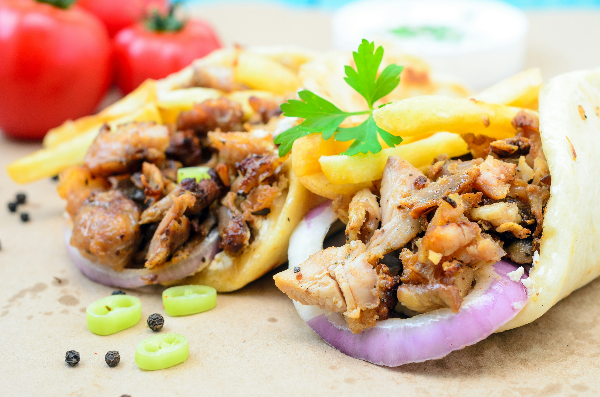

Homepage
How to make Chicken Shawarma

Image by
Alexander Mils
on
Unsplash
Description
Homemade chicken shawarma, can be served in bread with halloumi, chips and
salad if you prefer.
Ingredients
- 1 pack of chicken thighs
- 1 pack of halloumi
- 1 pack of bread(optional)
- 1 pack of chips(optional)
- 8 cloves of garlic
- 1 lemon
- 6 tbsp of greek yoghurt
- 1 tbsp of salt
- 1/2 tbsp of black pepper
- 1/2 tbsp of chilli flakes
- 1 tbsp of ground cumin
- 1 tsp of dried rosemary
- 1 tbsp of paprika
- 1 tsp of cayenne chilli pepper
Steps
-
Prepare the ingredients
Finely chop the garlic, cut the lemon into 1/8 pieces, if anything
else needs to be cut or sliced but isn't in the marinade, prep this
afterward.
-
Marinade the chicken
With the chicken in the bowl, add the finely chopped garlic, greek
yoghurt, juice of a lemon, and all of the herbs and spices.
Mix thoroughly, making sure every piece of chicken is fully coated.
Let that marinate for as long as you can wait.
-
Cook the chicken
Add the thighs into the air fryer and cook at 200°C for 15-20 minutes
flipping the chicken every 8 minutes or so.
-
Cook the halloumi + others
Slice the halloumi into even chunks and fry in a pan on low / medium
heat until golden brown. If you want bread and chips etc, prepare now.
-
Create a masterpiece
Chop the chicken thighs into smaller chunks, add your halloumi and
sauce and any extras on top and Voila! Enjoy your homemade chicken
shawarma.
Back to top